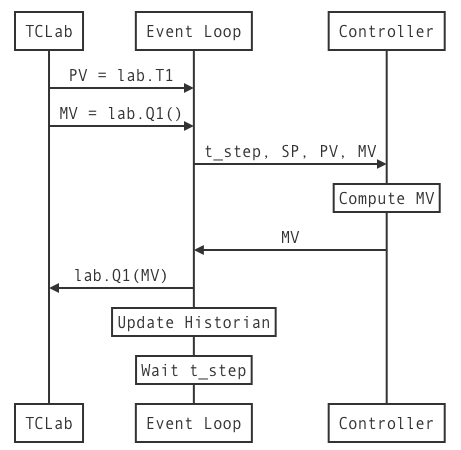

3.8. Controller Tuning#
3.8.1. Learning Goals#
Up to this point we have been discussing the theory and implementation of Proportional and Proportional-Integral control. The controllers have been specified with several parameters \(K_p\), \(K_I\), and the sampling time step. The purpose of this notebook is to describe methods for the practical determination of these parameters.
3.8.2. Versions of P, PI, and PID Control#
3.8.2.1. Error Signal#
The error signal measures the difference
3.8.2.2. Idealized (Textbook) PID control#
Textbook equations, Position Form
Expressed with error signal
Discrete-time Version for TCLab
Proportional Control: Reduces system time constants. Too much leads to overshoot and excessive control action.
Integral Control: Eliminates steady-state offset. Tends to slow-down and destablize control.
Derivative Control: Mitigates fast changes in PV. Not as important as P and PI for most process control applications.
3.8.2.3. Practical PI Control#
Problems with textbook control:
Position Form: How to choose \(\bar{MV}\)?
Reset (also called Integral) windup due to limits on manipulated variable.
Abrupt changes (“Bumps”) on transition from manual to automatic control.
Three changes to the textbook control rule:
Velocity form. Compute updates to \(MV\)
Anti-reset windup. Limit MV to feasible limits. Use measured MV if available.
Bumpless transfer. Leave SP out of the proportional control term.
Given parameters \(\delta t\), \(K_P\), \(K_I\), \(MV_{min}\), \(MV_{out}\)
At each time step \( t + \delta t\)
Using
prior values \(PV_{k-1}\)
current values for \(PV_k\), \(SP_k\), \(MV_k\) (if available)
Compute
3.8.3. PI Control for Temperature Control Lab#
The following sequence diagram shows the flow of information for one measure-compute-act-record cycle of the control system is shown in the following sequence diagram

3.8.4. PI Control with anti-reset windup and bumpless transfer#
# add anti-integral windup feature.
def PI_bumpless(Kp, Ki, MV_bar=0, MV_min=0, MV_max=100):
MV = MV_bar
PV_prev = None
while True:
t_step, SP, PV, MV = yield MV
e = PV - SP
if PV_prev is not None:
MV += -Kp*(PV - PV_prev) - t_step*Ki*e
MV = max(MV_min, min(MV_max, MV))
PV_prev = PV
3.8.5. Event Loop with Disturbance Variable and Manual Control#
from tclab import TCLab, clock, Historian, Plotter, setup
def experiment_3(controller, t_final=1000, t_step=5,
SP=lambda t: 40 if t >= 20 else 0,
DV=lambda t: 100 if t >= 420 else 0,
MV=lambda t: 25 if t <= 100 else None): # <== manipulated variable. Return none for auto
TCLab = setup(connected=False, speedup=60)
with TCLab() as lab:
# set up historian and plotter
sources = (("T1", lambda: lab.T1), ("SP", lambda: SP(t)),
("U1", lambda: U1), ("Q1", lab.Q1))
h = Historian(sources)
p = Plotter(h, t_final, layout=[("T1", "SP"), ("Q1", "U1")])
# initialize manipulated variable
lab.P1 = 200
lab.Q1(next(controller))
# event loop
for t in clock(t_final, t_step):
T1 = lab.T1
U1 = lab.Q1()
if MV(t) is None:
U1 = controller.send((t_step, SP(t), T1, U1)) # automatic control
else:
U1 = MV(t) # manual control
lab.Q1(U1)
lab.Q2(DV(t))
p.update(t)
h.to_csv("data.csv")
experiment_3(PI_bumpless(2, 0.1))
TCLab Model disconnected successfully.
3.8.6. Empirical Tuning Rules#
There are a number of tuning rules in the literature that provide recommended values for the proportional gain \(K_P\). These rules require process information obtained from testing.
3.8.6.1. Tuning Rules Based on Step Test Experiments#
3.8.6.1.1. Step Test Procedure#
Initialize experiment at a steady state. Confirm the process variable \(PV\) is at a constant value \(PV_1\). Eliminate any disturbances that might affect the test outcome.
Make a step change in the manipulated variable \(MV_1 \rightarrow MV_2\)
Record the process variable \(PV(t)\) until a new steady state \(PV_2\) is reached.
3.8.6.1.2. Control Parameters#
Using \(PV(t)\) and the following chart, compute values for a first-order plus dead-time model parameters for gain (\(K\)), process time constant (\(\tau\)), and dead-time (\(\theta\)).

The Ziegler-Nichols estimates for the proportional and integral gain are then computed from the following tuning rules. Astrom and Hagglunc (200\6) provide an updated “improved” formula for these parameters.
Type |
\(K_P\) |
\(K_I\) |
|---|---|---|
P (Ziegler-Nichols) |
\(\frac{\tau}{K\theta}\) |
|
PI (Ziegler-Nichols) |
\(\frac{0.9 \tau}{K\theta}\) |
\(\frac{0.3\tau}{K\theta^2}\) |
PI (Astrom and Hagglund, 2006) |
\(\frac{0.15\theta + 0.35\tau}{K\theta}\) |
\(\frac{0.46\theta + 0.02\tau}{K\theta^2}\) |
3.8.6.1.3. Evaluate Control Performance#
Tuning rules are developed based on acheiving some performance criteria. Typical criteria include measures liks
Among the best known and commonly used tuning rules are listed in the following table (also see Astrom and Murray, Chapter 11):
3.8.6.2. Tuning Rules based on Closed Loop Testing#
For strong theoretical and practical reasons, closed-loop experiments can provide superior results for tuning P, PI, and PID controllers. The easiest closed-loop tuning experiment is to implement simple relay control. The following code cells demonstrate relay control suitable for the identification experiment.
Experimental requirements:
Conduct the experiment long enough to ensure steady cycling about a constant setpoint.
Choose MV_min and/or MV_max to so the MV is “on” approximately 50% of the time.
Determine \(\Delta PV\) from peak-to-peak amplitude of the oscillation in \(PV\). The “critical gain” is
Determine the “critical period” \(T_c\) by measuring the period of oscillation.
Type |
\(K_P\) |
\(K_I\) |
|---|---|---|
P (Ziegler-Nichols) |
\(0.5 K_c\) |
|
PI (Ziegler-Nichols) |
\(0.4 K_c\) |
\(0.5\frac{K_c}{T_c}\) |
Implement and test the resulting controller.
from tclab import TCLab, clock, Historian, Plotter, setup
def experiment_4(controller, t_final=1000, t_step=5, SP=lambda t: 40 if t >= 20 else 0):
TCLab = setup(connected=False, speedup=60)
with TCLab() as lab:
# set up historian and plotter
sources = (("T1", lambda: lab.T1), ("SP", lambda: SP(t)),
("U1", lambda: U1), ("Q1", lab.Q1))
h = Historian(sources)
p = Plotter(h, 200, layout=[("T1", "SP"), ("Q1", "U1")])
# initialize manipulated variable
lab.P1 = 200
lab.Q1(next(controller))
# event loop
for t in clock(t_final, t_step):
T1 = lab.T1
U1 = lab.Q1()
U1 = controller.send((t_step, SP(t), T1, U1)) # automatic control
lab.Q1(U1)
p.update(t)
def Relay(MV_bar=0, MV_min=0, MV_max=60):
MV = MV_bar
while True:
t_step, SP, PV, MV = yield MV
e = PV - SP
if PV < SP:
MV = MV_max
else:
MV = MV_min
experiment_4(Relay())
TCLab Model disconnected successfully.
3.8.7. Lab Assignment 5#
You will test PI controllers tuned using Step Test experiment and a closed-loop Relay experiment. For testing, use the Chocolate tempering setpoint profile you developed for Lab Assignment 5.
Perform the Step Test experiment desribed above. Report the following results.
The code used to perform the experiment.
Calculations of \(K\), \(\tau\), and \(\theta\).
PI Parameter \(K_P\) and \(K_I\) determined using the “improved” tuning rules.
The code and results of applying this controller to the Chocolate tempering setpoint used in Lab Assignment 4. This time, leave heater 2 off.
Repeat the previous steps using closed-loop relay control to determine critical gain \(K_c\) and critical period \(T_c\). Report the PI Control parameters and experimental verification for the Chocolate tempering setpoint.